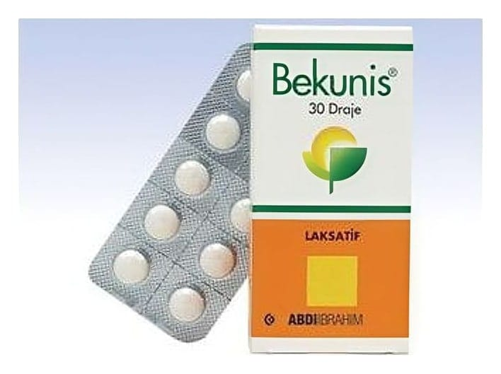

Bekunis 3 mg/5 mg Kaplı Tablet, 30 Adet

Ne için kullanılır
KT · Bölüm 1BEKUNİS 30 kaplı tablet içeren blister ambalajlarda sunulur.
BEKUNİS, bağırsak mukozasına direkt etki ile bağırsak hareketlerini ve içeriğinin geçiş hızını arttırır, su ve elektrolit salgılanmasını engeller. Bu etkiler ile dışkının yumuşatılması ve atılması sağlanır.
BEKUNİS kabızlığın kısa süreli tedavisinde kullanılır.